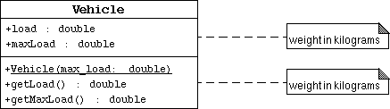
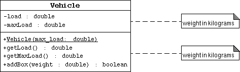
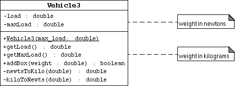

SL275: Module2: Object-Oriented Programming
Exercise #2: Explore Encapsulation
(Level 2)
Objective
In this exercise you will explore the purpose of proper object encapsulation.
You will create a class in three steps demonstrating the use of information hiding.
Directions
Version 1: No Information Hiding

In this version of the Vehicle class, you will leave the attributes
public so that the test program TestVehicle1 will have direct access
to them.
- Change your working directory to mod02d1/exercise2/version1.
- Create a class Vehicle that implements the above UML diagram.
- Include two public attributes: load "the current weight
of the vehicle's cargo" and maxLoad "the vehicle's maximum
cargo weight limit".
- Include one public constructor to set the maxLoad attribute.
- Include two public access methods: getLoad to retrieve the
load attribute and getMaxLoad to retrieve the
maxLoad attribute.
Note that all of the data are assumed to be in kilograms.
- Read the TestVehicle.java code. Notice that the program
gets into trouble when the last box is added to the vehicle's load
because the code does not check if adding this box will exceed the
maxLoad.
- Compile the Vehicle and TestVehicle classes.
- Run the TestVehicle class. The output generated should be:
Creating a vehicle with a 10,000kg maximum load.
Add box #1 (500kg)
Add box #2 (250kg)
Add box #3 (5000kg)
Add box #4 (4000kg)
Add box #5 (300kg)
Vehicle load is 10050.0 kg
Version 2: Basic Information Hiding

To solve the problem from the first version, you will hide the internal class
data (load and maxLoad) and provide a method, addBox,
to perform the proper checking that the vehicle is not being overloaded.
- Change your working directory to mod02/exercise2/version2.
- Create a class Vehicle that implements the above UML diagram.
You may wish to copy the Vehicle.java file you created in version #1.
- Modify the load and maxLoad attributes to be private.
- Add the addBox method. This method takes a single argument,
which is the weight of the box in kilograms. The method must verify
that adding the box will not violate the maximum load. If a violation
occurs the box is rejected by returning the value of false;
otherwise the weight of the box is added to the vehicle load and the
method returns true.
Hint: you will need to use an "if" statement.
Here is the basic form of the conditional form:
if ( <boolean_expression> ) {
<statement>*
} else {
<statement>*
}
Note that all of the data are assumed to be in kilograms.
- Read the TestVehicle.java code. Notice that the code can not
modify the load attribute directly, but now must use the
addBox method. This method returns a true or false value
which is printed to the screen.
- Compile the Vehicle and TestVehicle classes.
- Run the TestVehicle class. The output generated should be:
Creating a vehicle with a 10,000kg maximum load.
Add box #1 (500kg) : true
Add box #2 (250kg) : true
Add box #3 (5000kg) : true
Add box #4 (4000kg) : true
Add box #5 (300kg) : false
Vehicle load is 9750.0 kg
Version 3: Change Internal Representation of Weight to Newtons

Now suppose that you were going to write some calculations that determine
the wear on the vehicle's engine and frame. These calculations are easier
if the weight of the load is measured in newtons.
- Change your working directory to mod02/exercise2/version3.
- Create a class Vehicle that implements the above UML diagram.
You may wish to copy the Vehicle.java file you created in version #2.
- Modify the constructor, getLoad, getMaxLoad,
and addBox methods to use a conversion from kilograms
(the parameter weight measurement) to newtons (the instance variable
measurement). You might want to use the following private methods:
private double kiloToNewts(double weight) {
return (weight * 9.8);
}
private double newtsToKilo(double weight) {
return (weight / 9.8);
}
Note that now the internal data of the vehicle objects is in newtons
and the external data (passed between methods) is still in kilograms.
- Read the TestVehicle.java code. Notice that it is identical
to the test code in version #2.
- Compile the Vehicle and TestVehicle classes.
- Run the TestVehicle class. The output generated should be:
Creating a vehicle with a 10,000kg maximum load.
Add box #1 (500kg) : true
Add box #2 (250kg) : true
Add box #3 (5000kg) : true
Add box #4 (4000kg) : true
Add box #5 (300kg) : false
Vehicle load is 9750.0 kg
You should see no change in the output of the program. This demonstrates that
the (private) internal changes to the version #3 Vehicle class did not
change the code of the client class TestVehicle.